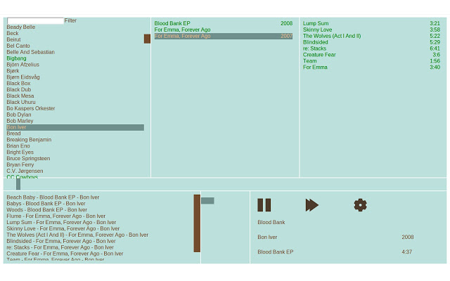

Posts
-
Nice IceVTOL, Vertical Takeoff, Flying WingExample Smoothed-particle hydrodynamics with C and OpenMPApplication of using MPI for distributed numerical computation; solving Poisson's equation.
This post is about high performance numerical computing. It explains the well known Poisson's equation, why it is a tough problem to solve fast when it gets big and then shows one way to implement a solver that will scale to huge problem sizes
Film job at ISFIT!FDM heat equation of isolated rod with dynamic end temparatures
To test my understanding of the FDM method I made a simple implementation of the Crank-Nickelson method applied on the heat equation. The physical intepretation is this: You have a perfectly insulated rod of length \(l\). At time \(t_0\) you know the temperature distribution in the ro
Firkant, a music player, completely in your browser! Firkant is a music player that runs solely in the browser. It streams music from a server using the new HTML5 apis
The quad copter progressesNew data source for OpenAviationMap, OpenAir, and with it a new parser!I've been working on a parser for the OpenAir format this weekend. As usual I like to work in Haskell. The Parsec library makes sense when creating parsers